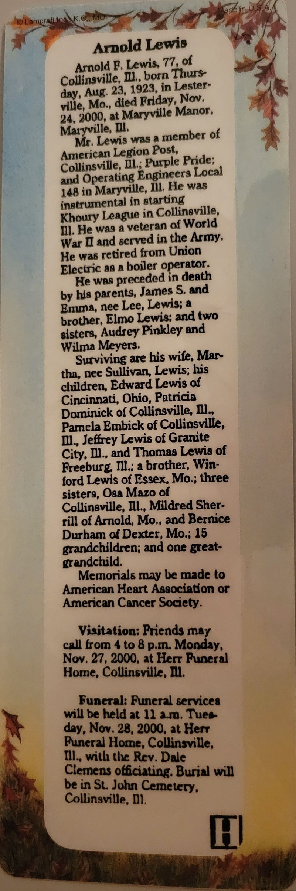

Lora Berniece Lewis Durham (reported as Bernice Durham in Arnold’s 2000 obituary)
Elmo Lewis
Winford Lewis
Audrey Pinkley
Wilma Meyers
Osa Mazo
Mildred Sherrill
Siblings
Unknown
Family Relationship Notes
The 1950 census directly records James S. Lewis, 58, and wife Emma L., 59, at Lesterville Township, with daughter Lora B., 23, and granddaughters Sharon L. and Karen L., both 5. The original image is archived in both spouses’ documents folders. The 2000 obituary of their son Arnold F. names James S. and Emma née Lee as his parents and supplies names for their other children.
Find a Grave identifies James Samuel Lewis (14 October 1891–26 March 1971), buried at Rayfield Cemetery in Lesterville, and shows the same shared marker as Emma. The dates agree with the census ages. A derivative Find a Grave family list names parents James Theodore Lewis and Mary Jane (Black) Lewis; keep that as a further-generation research lead, not an established Gen VIII assignment.
The 2000 Arnold obituary supports his parentage and sibling list. Find a Grave’s Lora Berniece Lewis Durham memorial links Lora to James and Emma and to Arnold; this matches the obituary’s “Bernice Durham,” likely the same daughter.
On Family Tree Sites
No independently verified tree profile is linked.
Life Timeline
About 1892 Born in Missouri, estimated from age 58 in the 1950 census.
1950 Enumerated in Lesterville Township, Reynolds County, Missouri, with wife Emma L. and daughter Lora B., 23
Life Story
James Samuel Lewis was born in Missouri and was enumerated in Lesterville Township, Reynolds County, in 1950 with wife Emma L. and daughter Lora B. He died 26 March 1971 and is memorialized at Rayfield Cemetery in Lesterville. Find a Grave’s shared marker gives 14 October 1891–26 March 1971. His son Arnold’s 2000 obituary names James S. and Emma née Lee as parents and identifies their children.
Photo Gallery
James Samuel and Emma Lee Lewis’s shared marker at Rayfield Cemetery. — source

Their son Arnold F. Lewis’s 2000 obituary clipping; names James S. and Emma née Lee as parents. — source
Find a Grave gives James’s full name, birth/death dates and Rayfield Cemetery burial, and its shared marker with Emma shows both date panels. The memorial is derivative; no civil death or cemetery register was inspected.
The 1950 census lists daughter Lora B., age 23; FamilySearch indexes her as Lora B. James. The 2000 Arnold obituary names a sister Bernice Durham, and Find a Grave’s Lora Berniece Lewis Durham memorial links her to James/Emma and Arnold. They are likely the same person; her original birth-name/marriage bridge is still needed.
Arnold’s 2000 obituary identifies additional children of James and Emma: Elmo Lewis, Winford Lewis, Audrey Pinkley, Wilma Meyers, Osa Mazo, and Mildred Sherrill. These are obituary name forms; siblings are listed here rather than separately profiled.
Find a Grave links James to James Theodore Lewis and Mary Jane Black Lewis as parents. This derivative lead needs independent records before changing the Unknown parent card or creating Gen VIII profiles.
DNA
No DNA matches linked yet.
Family Notes
No Family Notes link is listed on this profile.
Profile created 24 November 2026 from original 1950 census image and secondary SS-5 transcription; parentage remains a strong working assignment.